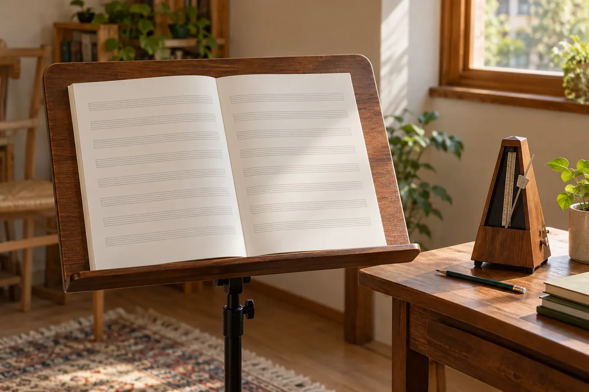
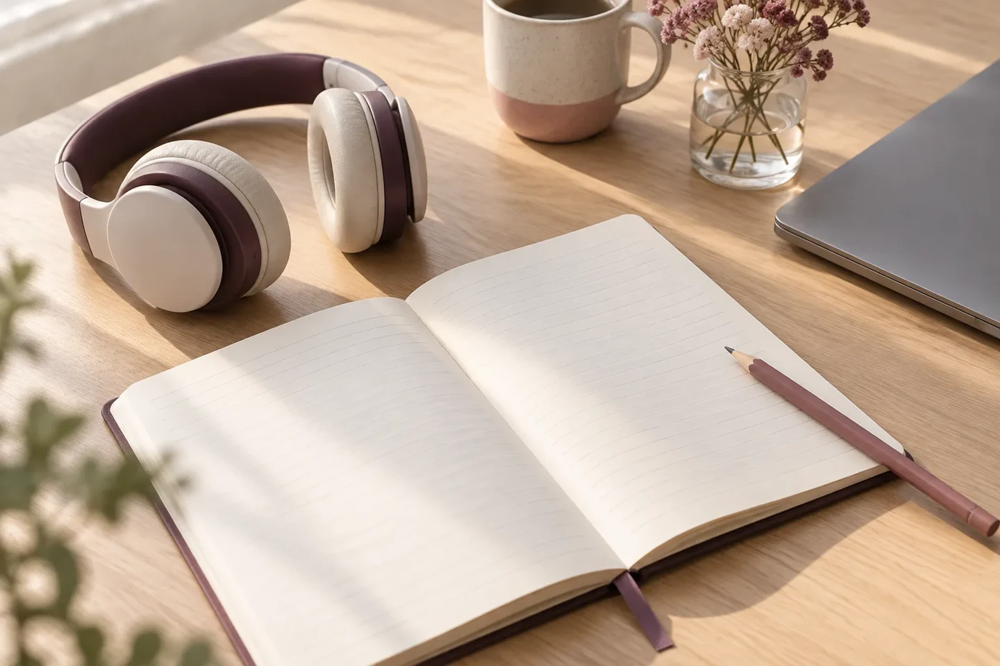

01 / For children
お子さまのピアノを考えている方へ
好きな音楽や、ピアノへの興味をお聞かせください。はじめて習う際に気になることも、無料体験の相談時に確かめられます。
お子さまの相談を考えるMatsuyama, Higashino · Piano
はじめて鍵盤に触れる方も、
もっと音楽を深めたい方も。
あなたの暮らしに合う、ピアノとの時間を。
Your own rhythm
松山市東野のようこピアノ教室は、初心者から上級者まで、目的やライフスタイルに合わせることを大切にしています。今の気持ちや、これからやってみたいことから相談できます。
01 / For children
好きな音楽や、ピアノへの興味をお聞かせください。はじめて習う際に気になることも、無料体験の相談時に確かめられます。
お子さまの相談を考える02 / For adults
初めての挑戦、久しぶりの再開、さらに深めたい演奏。経験や弾きたい曲、日々の暮らしに合わせた希望をお伝えください。
ご自身の相談を考えるこの2つは相談の入口です。別々のコースや料金区分を示すものではありません。

Beyond the keys
2026年の発表会は、ソロ・ブルクミュラー・連弾の3部構成。ブルクミュラーの生涯を、スライドとクイズで紹介した様子もブログにつづられています。
教室の取り組みや、その日の空気は、先生の言葉が届く公式ブログで。
2026年の発表会記事を読む ↗First conversation
体験を考えている方は、次のようなことを整理しておくと相談しやすくなります。
募集状況は変わるため、このページでは空き枠を表示していません。
募集案内を公式ブログで確認 ↗公式案内の連絡先：yocopiano.kyoushitsu@gmail.com
表示のみです。メールアプリは起動しません。
